Strona główna 5plus.edu.pl: cegła #B95737 zamieniona na #FEAC32, nic więcej.
Poprawka czytelności: mały tekst, który był cegłą na jasnym tle, jest ciemnym bursztynem #9A5800 (pomarańcz #FEAC32 ma na kremie kontrast 1,9:1). Przyciski mają granatowy napis. Duże odręczne napisy, numery, kropki i strzałki są w #FEAC32.
Dziś (pierwsze ekrany, dla porównania):
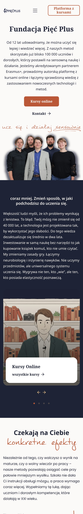
Po zmianie, cała strona:
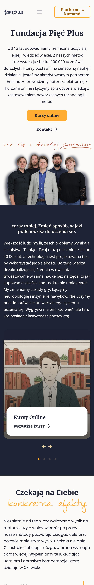
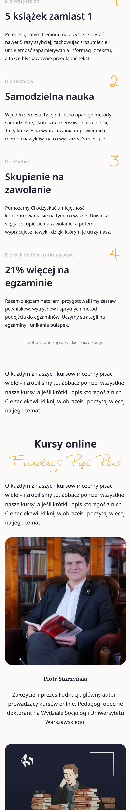
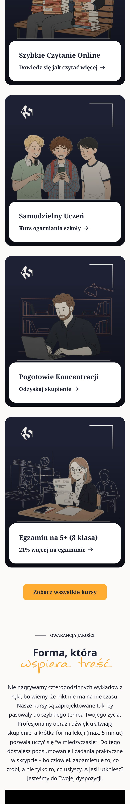
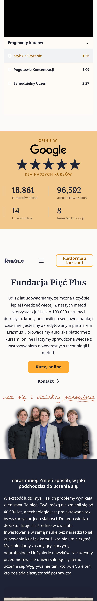
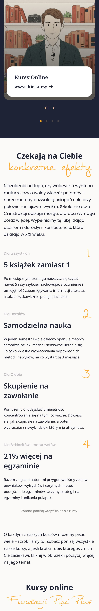
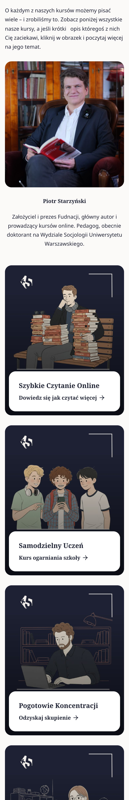
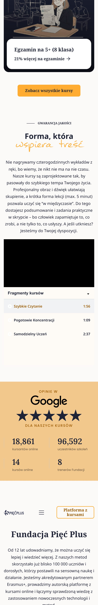
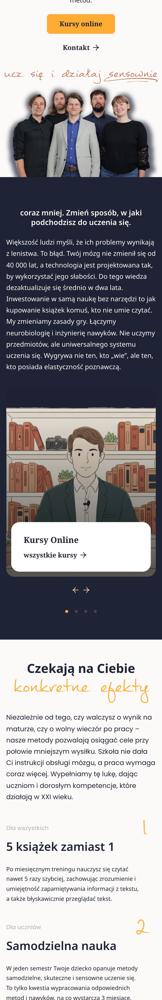
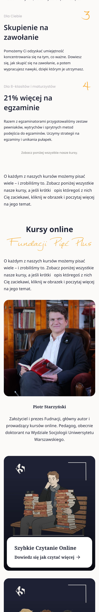
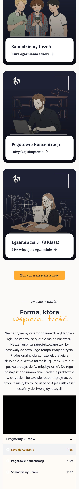
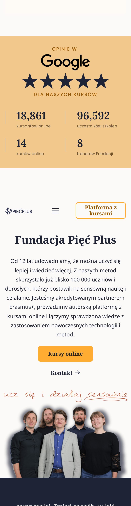